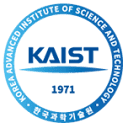

Research
Even as a child I was captivated by how thought and ideas originate in us: how we associate ideas from different parts of our experience, old and new, then use them in novel ways in new situations, how "time" is perceived and stored in memory. That pull led me to a career in AI (ML back then), exploring these questions through the lens of constrained optimization. For about ten years I have straddled language and multimodal research, proposing modifications to the transformer that power Amazon systems. Lately I have been on a mission to teach agents to do computer use, although not as well yet.
A recurring theme across this work is compressed intelligence (doing more with less). It has fascinated me from early work on image compression, to compressing an agent's history, to distilling the emergent properties of large models. Doing this efficiently would unlock a lot of capability even with the AI systems we have today.
Full list on Google Scholar.
Mentees & Collaborators#
I am fortunate and proud to have worked with incredible researchers. I have learnt from them much more than what I could teach back.
- Yash Patel·learnt image compression·scientist at Meta
- Poojan Oza·research into multimodal OCR training·scientist at Amazon Go

- Chih-Hui (John) Ho·vision language research, ECCV·scientist at SAP
- Xiaoshuai Hao·vision language research·researcher at Xiaomi EV

- Ali Furkan Biten·vision language research, CVPR·at Computer Vision Center, Barcelona
- Yichu Zhou·document understanding with LLMs·scientist at Pinterest
- Chenge Li·vision language research·senior scientist at Amazon
- Yuan Gao·computer use vision language pretraining, CVPR·researcher at xAI
- Park Joonhyung·precise GUI grounding, ACL·postdoc at KAIST

- Varun Nagaraj Rao·retrieval augmented vision language learning·PhD at Princeton
- Tian Li·accelerated inference in transformer models·scientist at Amazon
- Ying Nian Zhao·multimodal transformer distillation·scientist at Amazon
- Xiyue Zhu·improving computer use automation with compressed history states·PhD at UIUC
- Shrinidhi Kumbhar·accelerating inference with diffusion LLMs, CVPR·PhD at Arizona State
- Sungnyun Kim·distillation on document understanding·postdoc at KAIST
- Simone Bombari·differential privacy research·PhD at ISTA
- Ofir Abramovich·multimodal research·PhD at Reichman University
- Tianyang Zhao·multimodal distillation research·scientist at Amazon Go